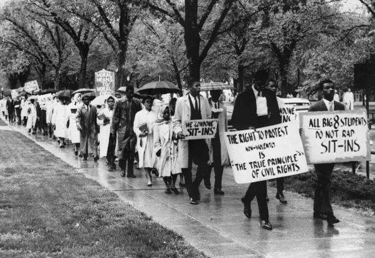
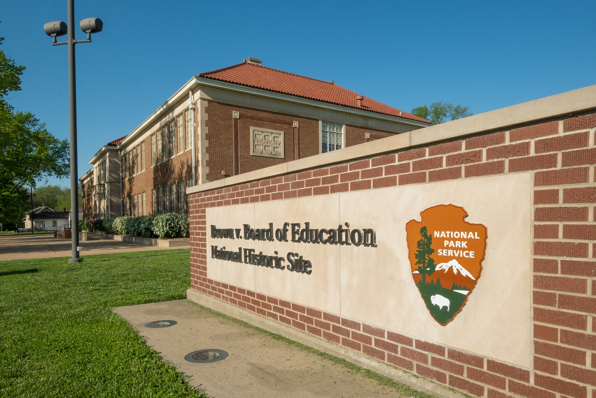

Legacy: Brown's Enduring Significance
The Foundation for Civil Rights
Brown v. Board of Education transformed American civil rights law and became the foundation for dismantling segregation throughout society. While the decision specifically addressed public schools, its reasoning applied to all government-mandated segregation. The Court's declaration that separate was inherently unequal challenged the entire Jim Crow system.
Following Brown, courts struck down segregation in parks, beaches, golf courses, buses, and other public facilities. The decision established that the Fourteenth Amendment's Equal Protection Clause prohibited the government from treating citizens differently based on race. This principle extended far beyond education, reshaping American law and society in fundamental ways.
Inspiring the Civil Rights Movement
Brown energized the civil rights movement by demonstrating that change was possible through legal and constitutional means. The decision gave activists confidence that federal courts could protect their rights against state oppression. Within a year of Brown, Rosa Parks refused to give up her seat on a segregated bus, and the Montgomery Bus Boycott began.
Photo: Library of Congress, [Catalog number]
Martin Luther King Jr. and other civil rights leaders frequently cited Brown as proof that segregation violated American values and the Constitution. The decision provided moral authority for the movement's demands. When King wrote his Letter from Birmingham Jail in 1963, he invoked Brown's principles to argue that segregation was not just wrong but unconstitutional. The Supreme Court had spoken, and segregationists were defying the law.
Brown also influenced the strategy and tactics of civil rights activism. The NAACP's success in achieving a unanimous Supreme Court decision through careful legal work inspired other organizations to use litigation as a tool for social change. At the same time, Brown showed that court victories alone were insufficient. The massive resistance to school integration demonstrated that legal rights meant nothing without enforcement and political will to implement them.
Impact on Education
School integration proceeded slowly and unevenly, but it eventually transformed American education. By the 1970s, most school districts had abandoned formal segregation policies, though de facto segregation based on residential patterns persisted. Studies showed that integrated schools benefited both Black and white students by exposing them to diverse perspectives and preparing them for life in a multiracial society.
However, Brown's promise of equal educational opportunity remains incomplete. Many schools today are as segregated as they were before Brown, not because of explicit policies but because of residential segregation and district boundaries. Achievement gaps between white students and students of color persist, reflecting broader inequalities in American society. The struggle for educational equity continues, building on Brown's foundation while grappling with new challenges.
Constitutional Principles
Brown established crucial constitutional principles that extend beyond race and education. The Court's emphasis on dignity, equality, and the harmful effects of government-sponsored discrimination influenced later decisions protecting other groups. When the Supreme Court struck down laws discriminating against women, LGBTQ individuals, and other minorities, it often relied on reasoning similar to Brown.
The decision also strengthened the principle of judicial review and the Court's role in protecting minority rights. Brown demonstrated that the Supreme Court could stand against popular prejudice and enforce constitutional guarantees even when doing so provoked fierce resistance. This precedent proved essential in later battles over voting rights, affirmative action, and other civil rights issues.
"Brown v. Board of Education was not simply about children and education; it was about the whole American experiment in democracy and the viability of the Constitution in the modern world." Historian James Patterson, reflecting on Brown's significance
James T. Patterson, Brown v. Board of Education: A Civil Rights Milestone and Its Troubled Legacy (2001)
Unfinished Business
While Brown marked a crucial turning point, it did not end educational inequality or racial discrimination. Many schools remain segregated by race and class, with students of color disproportionately attending underfunded schools with fewer resources. The achievement gap persists, and debates continue about how to fulfill Brown's promise of equal educational opportunity.
Modern challenges include persistent residential segregation, funding inequities between wealthy and poor districts, and ongoing debates about affirmative action and school choice. Some argue that the focus on integration diverted attention from the need to improve predominantly minority schools. Others maintain that true equality requires both integration and adequate resources for all students.
Global Influence
Brown influenced human rights movements worldwide. Activists fighting apartheid in South Africa, discrimination in Europe, and caste-based segregation in India cited Brown as evidence that segregation violated fundamental human rights. The decision demonstrated that courts could be powerful forces for social change and that constitutional principles could overcome deeply entrenched discrimination.
The international community watched Brown closely during the Cold War. The United States sought to present itself as a beacon of freedom and democracy, but segregation contradicted this image. Brown allowed American leaders to argue that the nation was progressing toward racial equality, though the slow pace of change limited this argument's effectiveness.
Commemoration and Remembrance
Photo: National Park Service
In 1992, Monroe Elementary School in Topeka, where Linda Brown attended, became the Brown v. Board of Education National Historic Site. The National Park Service operates the site as a museum and educational center, preserving the story of Brown and its significance for American history. Thousands of visitors each year learn about the case and reflect on the ongoing struggle for equality.
The fiftieth anniversary of Brown in 2004 prompted national reflection on the decision's legacy. Scholars, activists, and policymakers debated how much progress had been achieved and how much work remained. While celebrating the courage of the families who challenged segregation and the justices who ruled against it, many acknowledged that American schools and society still fell short of Brown's vision of equality.
Lessons for Today
Brown teaches several enduring lessons. First, it demonstrates that ordinary people fighting for their rights can achieve extraordinary change. The parents who risked their livelihoods and safety to challenge segregation showed remarkable courage that continues to inspire activism today.
Second, Brown reminds us that legal victories require sustained effort to implement and maintain. The Supreme Court's ruling was necessary but not sufficient to end segregation. It took decades of continued litigation, legislation, and activism to make progress toward integrated schools.
Third, Brown illustrates the power of moral arguments rooted in constitutional principles. By framing segregation as a violation of fundamental American values of equality and dignity, the NAACP and the Supreme Court made a compelling case that changed minds and shaped public opinion.
Finally, Brown shows that the fight for justice is never completely won. Each generation must renew the commitment to equality and address new forms of discrimination and inequality. The promise of Brown v. Board of Education remains a call to action, challenging Americans to create a society where all children receive equal educational opportunities regardless of race.
Brown's Legacy Timeline
- 1955-1965: Civil Rights Movement gains momentum, citing Brown
- 1964: Civil Rights Act accelerates school desegregation
- 1968: Green v. County School Board requires active desegregation
- 1971: Swann v. Charlotte-Mecklenburg allows busing for integration
- 1978: Regents v. Bakke addresses affirmative action in education
- 1992: Brown National Historic Site established
- 2007: Parents Involved limits use of race in school assignments